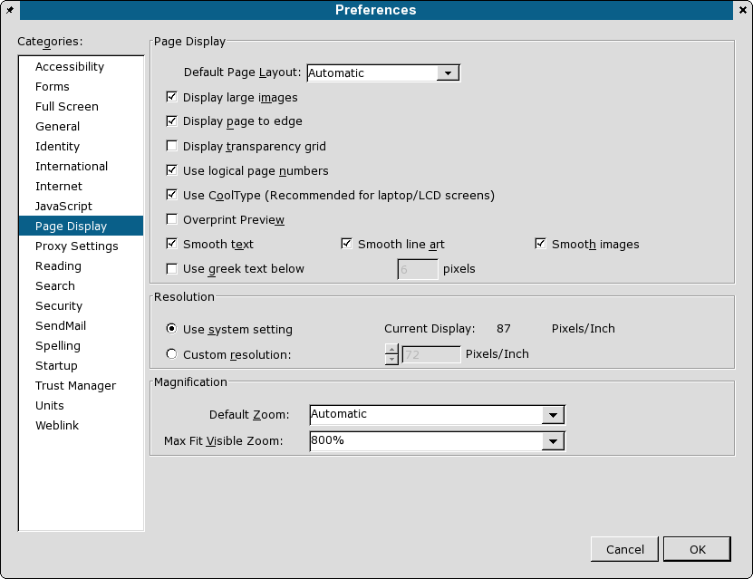
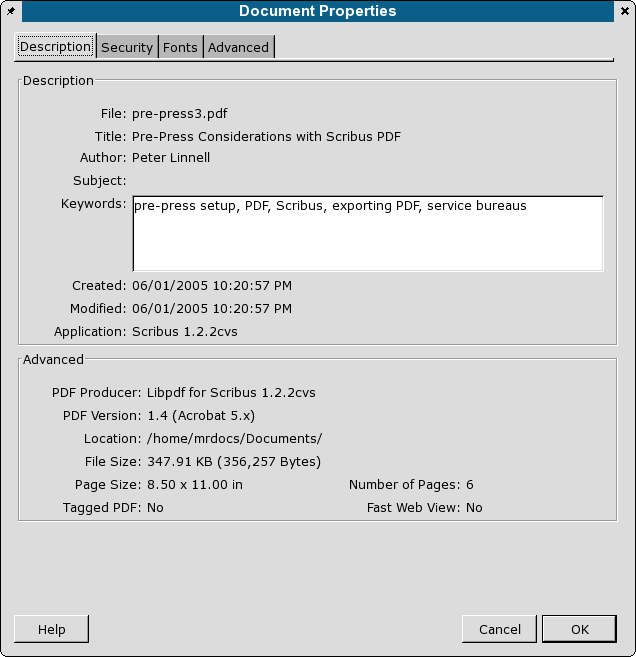
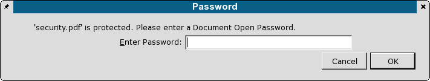
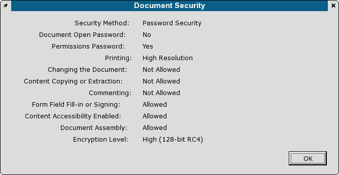

Adobe Acrobat Reader® is in my experience one of the essential tools to have when using Scribus. Although mostly a simple viewer, it has some advanced features which no other PDF viewer has in the Linux,*nix world: full support for JavaScript with a PDF (You did not know a PDF was scriptable? Scribus is unique in the Linux/*nix world for the ability to create scriptable interactive PDF forms) and detailed information which is embedded in the PDF, but viewable only in Acro Reader. Moreover, while PDF is a published standard, Adobe invented PostScript cript on which PDF is based and has a commercial incentive to promote PDF on all platforms. At the time of this reading Adobe announced a public beta of Adobe Reader 7. If it is as good and feature complete as the Windows/Mac versions. this will be a big help on the Linux desktop.
Note: There is a bug in Acrobat Reader 5.0.x, which will not display form fields properly, unless the user environment is set to lang=en. In addition, it will not even launch under newer distributions which have a UTF-8 locale (RH8+ for example), unless the locale variable is set to lang=en. Otherwise you will get an error message: Warning: charset "UTF-8" not supported, using "ISO8859-1". > Aborted
One other tip for some systems is to add this to the acroread launching script:
First, make sure you have version 5.0.8 or later for Linux. This version is vastly better than 4.0.5, even with above mentioned bugs - more stable, faster loading, better printing, and more accurate color. If you are running Red Hat 8.0 or newer+, the easiest way to install Acro Reader is to get the RPMS from Guru Labs. The place to get Acrobat Reader, if your distribution does not offer an rpm, deb or other package is from Adobe.
Next, once you get it installed and working, open Acrobat Reader, click through the usual license stuff and select: Edit > Preferences > General and you will have a dialog like the one below:
|  |
This dialog is very important to set up properly for optimized viewing Scribus created PDFs. Display Edge to Edge will give you a larger viewing area to view your PDF. Smooth Text, Smooth Line Art and Smooth Images applies a bit of anti-aliasing when viewing. If you send someone a Scribus created PDF and they complain the text or gradients) look like barbed wire or are "banded", advise the user to enable these settings which are common on all later versions of Acrobat Reader - regardless of platform. There are other cross- platform fonts hints in the PDF Export Options section. Cool Type is a feature specific for making PDF readable on LCD laptop screens. It is a way of adjusting the anti-aliasing and sub-pixel rendering. Otherwise, leave it unchecked.
If you are creating Scribus files with transparency effects and export PDF 1.4 (PDF 1.3 does not support transparency), you can enable Show Transparency Grid. The other options are mostly for the web browser plug-in. I find splash screens a bother, so I leave that unchecked.
|
Next, looking at the Reader window above, there are 3 features which can be useful:
|  |
This shows the document size, date of creation and creating application. This information is automatically embedded. Scribus can optionally add author and document title. In addition, this shows Dublin Core RDF (Resource Definition Format) and document security strength.
Document Security. Scribus has the ability to encrypt a document with specific user rights. If you enable Security in the PDF export dialog, when you export PDF 1.3, encryption is 40 bit strength.
|  |
If you export a PDF 1.4 file, encryption is 128 bit strength:
|  |
Annotations are non-printing notes which Scribus can optionally embed within a PDF. This is really simple. Create a text frame. Then add your notes and right click, select PDF Options and check "Is PDF Annotation".
For other "hidden" features, read through the online help, which is actually a PDF. Beginning with page 10, there are a number of less well known features, including the console command line options. The command line options are specific to Linux/Unix and include some neat options to export PDF into Postscript. There also hints on settings specific to Acrobat Reader in ~/Xdefaults.
Advanced Settings - Unfortunately, Adobe did not enable a graphical UI choice for enabling/disabling local fonts. What this means Acrobat will use locally installed fonts which are named in the PDF, if it can find them in your font path. In your home directory is a .acrobat/prefs file. Make a backup copy then open this file in a text editor. Almost at the end you are looking for this line:
I recommend you set this to false for use with Scribus. Why? As is often the case PDFs you create in Scribus will be sent to other users who are not running on Linux. What you will want in this case is realistic view without your fonts. Thus, the only reliable way of ensuring your doc will view properly anywhere is to embed the fonts. You can subset them in the font preferences panel to save file size. This particularly important when using the Ghostscript fonts, like the Nimbus family. Acrobat Reader does a poor job of simulating them with its own built-in multi-master fonts.